Open today's slides on your own phone or laptop — then you can run real code yourself.
hassanmiir.github.io/cpp-course/lecture7/
Dr. Mir Hassan
Associate Professor in Artificial Intelligence and Trustworthy Digital Systems
📱 Point your camera here
Lecture 7 · Arrays & Vectors
One name. A hundred values
Thirty students, thirty variables — s1, s2, s3 … s30? Never. An array holds the whole list under one name, and a loop walks every item in three lines.
A 2-hour hands-on session · you'll process a whole class of scores
Where We Left Off
One variable held one value
A function can process a number. A loop can repeat. But to hold many values you'd need many variables — unmanageable past a handful.
An array is a row of boxes under one name. Reach any box by its number — its index.
s[0] · s[1] · s[2] · …
PART 1
The row of boxes
Declare an array, and reach any value by its index.
Declare & fill
Index from ZERO
Read one — live
The Shape
Boxes are numbered from 0
int s[5] = {90, 72, 55, 88, 63}; // 5 scores, one name
cout << s[0]; // 90 — the FIRST box
cout << s[4]; // 63 — the LAST box
s[1] = 100; // change one box
5 items → valid indexes are 0, 1, 2, 3, 4. There is no s[5].
Zero-based
The first box is s[0], not s[1]. This trips up everyone at first.
Fixed size
s[5] is 5 boxes — chosen when you write it, and it can't grow.

Read & write
Use s[i] like any variable: print it, change it, add to it.
Watch It Run Plays automatically
See the boxes get read, one index at a time
Watch s[0] and s[4] light up — then a loop walks every box, adding each to a running total.
Your Turn · Live Code Run it!
Print every item with a loop
The loop variable i becomes the index. Change a score, add a box (remember to bump the 5!), and run. (Input: none)
#include <iostream>
using namespace std;
int main() {
int s[5] = {90, 72, 55, 88, 63};
for (int i = 0; i < 5; i++) { // i = 0,1,2,3,4
cout << "s[" << i << "] = " << s[i] << endl;
}
return 0;
}
You Be the Computer On paper · 3 min
Which box, which value?
Given int a[4] = {10, 20, 30, 40}; — work out each line by hand.
Index ≠ positiona[2] is the third box because counting starts at 0. Say it out loud: "index two is the third item." That habit kills the most common array bug.
🏆 BIG CHALLENGE
The Podium
Find gold, silver & bronze in a list of scores — the twist: some players didn't show up.
Recall: arrays & index (today)
Recall: loops & continue (Lecture 5)
Recall: functions (Lecture 6)
Pair Challenge · Use Your Brain 30 min
Build the podium 🥇🥈🥉
A round's scores are {42, -1, 88, 71, -1, 95, 63, 88}. A -1 means that player didn't show up — it is NOT a real score.
Warm-up: loop the array and skip every -1 (remember continue from Lecture 5). Count how many actually played.
Gold: find the highest real score, and remember which index it sat at.
Podium: find gold, silver AND bronze (top three real scores).
Pro: write a function bool played(int s) and use it so your loops read like English.
The trapsDon't let -1 win the "lowest" by accident. Start gold at the first real score, not s[0]. For the podium, think: when a new score beats gold, the old gold slides down to silver…
The Podium · Build Here Run it!
Start from this skeleton
Tiers 1–2 are wired up. You add silver & bronze (tier 3), then the played() function (tier 4). Uses only arrays + ints, so it runs right here. (Input: none)
#include <iostream>
using namespace std;
int main() {
int s[8] = {42, -1, 88, 71, -1, 95, 63, 88};
int n = 8;
int players = 0;
int gold = -1; // best real score so far (-1 = none yet)
for (int i = 0; i < n; i++) {
if (s[i] == -1) continue; // skip no-shows (Lecture 5!)
players++;
if (s[i] > gold) gold = s[i];
// TODO tier 3: keep silver and bronze too
}
cout << "Players: " << players << endl; // should be 6
cout << "Gold: " << gold << endl; // should be 95
// TODO: print Silver and Bronze
return 0;
}
The Podium · One Solution Compare yours
How the cascade works
bool played(int s) { return s != -1; } // tier 4: reads like English
int gold=-1, silver=-1, bronze=-1, players=0;
for (int i = 0; i < n; i++) {
if (!played(s[i])) continue; // skip no-shows
players++;
if (s[i] > gold) { // new champion?
bronze = silver; silver = gold; gold = s[i]; // cascade down
} else if (s[i] > silver) {
bronze = silver; silver = s[i];
} else if (s[i] > bronze) {
bronze = s[i];
}
}
// Players 6 · Gold 95 · Silver 88 · Bronze 88
Skip, don't break
continue jumps to the next player — the -1 no-shows never pollute the podium.
The cascade
Beat gold → old gold becomes silver, old silver becomes bronze. Order of the three lines matters!
A tiny function
played() hides the -1 rule in one place — change it once, every loop updates.
Why it's trickyUpdating three records in the right order is the real puzzle — a single max is easy, a podium makes you think about what happens to the previous winners. That's the same idea behind leaderboards everywhere.
PART 2
Walk the whole list
Sum, average, and find the biggest — all with one loop.
Sum & average
Track the maximum
The out-of-bounds trap
The Three Patterns
One loop, a running answer
int s[5] = {90, 72, 55, 88, 63};
int total = 0; // running sum starts at 0
int best = s[0]; // assume first is biggest
for (int i = 0; i < 5; i++) {
total += s[i]; // add this box
if (s[i] > best) best = s[i]; // beat the record?
}
double avg = total / 5.0; // 5.0 → real division
Running total
Start at 0, add s[i] each pass — just like last lecture's sum.
Track the max
Hold the best so far; replace it whenever you find bigger. Start it at s[0].
Average
Divide by 5.0 (not 5) so you get 73.6, not a chopped 73.
Danger Zone
Reaching past the last box
int s[5] = {90, 72, 55, 88, 63};
for (int i = 0; i <= 5; i++) // BUG: <= 5 reaches s[5]
cout << s[i]; // s[5] doesn't exist!
Out of bounds
C++ won't stop you reading s[5] — you get garbage, a crash, or worse. No safety net.
The rule
For size N, loop i = 0 while i < N. Last valid index is N − 1.
Burn it in< size, never <= size. The off-by-one from loops is back — and with arrays it reads memory that isn't yours.
Quick Check Think!
What's the last valid index?
double temps[8];
The array has 8 boxes.
A 8
B 7
C 1
PART 3
The vector upgrade
An array that can grow — and knows its own size.
Grows with push_back
Knows its .size()
Array vs Vector
vector — a list that grows
#include <vector>
vector<int> scores = {90, 72, 55};
scores.push_back(88); // add to the end — array can't!
scores.push_back(63);
for (int i = 0; i < scores.size(); i++) // it knows its size
cout << scores[i] << " ";
Indexing is identical: scores[0], scores[i] — same zero-based rule.
push_back
Adds one item to the end. The vector resizes itself — no fixed limit.
.size()
Ask it how many items it holds. Loop i < scores.size() — never guess the count.
Same indexing
Everything you learned about s[i] works unchanged.
Your Turn · Live Code Run it!
Grow a list, then total it
Add another push_back, then watch .size() and the loop handle it automatically — no 5 to update. (Input: none)
#include <iostream>
#include <vector>
using namespace std;
int main() {
vector v = {4, 8, 15};
v.push_back(16);
v.push_back(23); // try adding one more line
int total = 0;
for (int i = 0; i < v.size(); i++)
total += v[i];
cout << "Items: " << v.size() << ", total: " << total << endl;
return 0;
}
PART 4
Process a class of scores
Average and highest — the real gradebook job.
The class average
The top score
Work with a partner
Pair Challenge · Use Your Brain 15 min
Average & highest
Given a list of course scores, with one loop:
Average: sum every score, divide by size (use .0 for a real number).
Highest: track the best score as you go, start it at the first item.
Stretch: count how many scores are above the average (a second quick loop).
Two traps to dodgeLoop i < size (not <=). And start best at s[0], never 0 — a 0 start breaks if all scores were negative.
Pair Challenge · Build Here Run it!
Your gradebook
Sum loop is worked for you. You add the "highest" tracking inside the same loop, then print it. (Input: none)
#include <iostream>
#include <vector>
using namespace std;
int main() {
vector s = {90, 72, 55, 88, 63};
int total = 0;
int best = s[0]; // assume first is the highest
for (int i = 0; i < s.size(); i++) {
total += s[i];
// TODO: if s[i] is bigger than best, update best
}
double avg = total / (double)s.size();
cout << "Average: " << avg << endl;
cout << "Highest: " << best << endl; // make this correct
return 0;
}
One Solution Compare yours
How it works
int total = 0, best = s[0];
for (int i = 0; i < s.size(); i++) {
total += s[i]; // running sum
if (s[i] > best) best = s[i]; // new record?
}
double avg = total / (double)s.size(); // real division
// stretch: how many beat the average?
int above = 0;
for (int i = 0; i < s.size(); i++)
if (s[i] > avg) above++;
Average = 73.6
368 ÷ 5. The (double) keeps the decimal.
Highest = 90
Start at s[0], replace whenever a bigger value appears.
Above = 2
90 and 88 beat 73.6. Reusing the list for a second question — same pattern.
Recap
What you can do now
Store many
An array or vector holds a whole list under one name; reach any item by its zero-based index.
Process all
A loop over i < size walks the list — sum, average, max — whatever the length.
MilestoneArrays + loops + functions together is real data processing. You can now handle a class of 5 or 5,000 with the same few lines.
Keep These Words
Today's keywords — click any one for a reminder
array
Fixed row of boxes
index
Box number (from 0)
vector
List that grows
push_back
Add to the end
.size()
How many items
out of bounds
Past the last box
running total
Build up a sum
zero-based
Counting from 0
Before Next Time
Practice (15–20 min)
Lowest score
Copy your gradebook and find the minimum instead of the maximum (start worst = s[0], keep the smaller).
Reverse it
Print an array from last to first: loop i from size−1 down to 0.
Make it a function
Combine with Lecture 6: write double average(vector<int> v) and call it on two different lists.
Next Lecture
Lecture 8 — Strings & Text
A string is really a list of characters — so everything you just learned about indexing applies to text too.
Read words and whole lines
Reach any character by index
Loop over text to search and transform it
One name. A hundred values.
Lists are everywhere in real software — scores, prices, pixels, messages. You can now hold them and process them. Next: text is just a list too.
Dr. Mir Hassan · Associate Professor in AI & Trustworthy Digital Systems